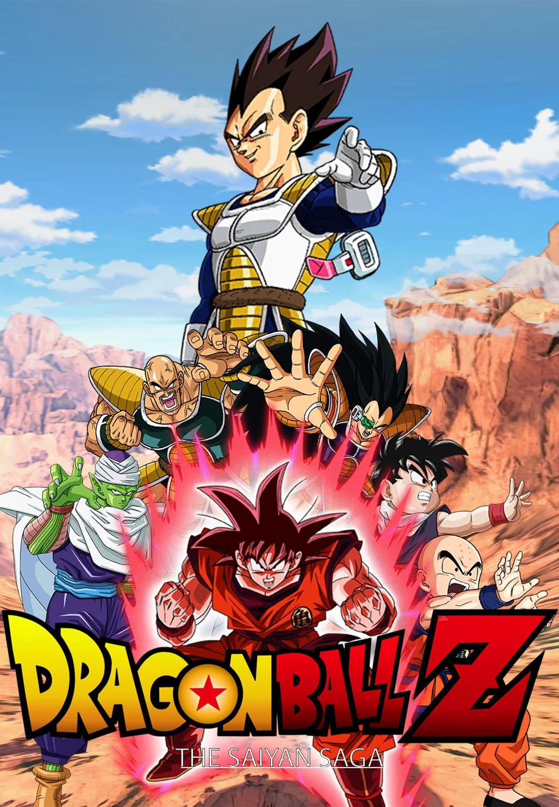

11.30.15_f8aad35c-fotor-bg-remover-2025080722435.png)
 21.12.37_3fee6671-fotor-bg-remover-20250807224216.png)

Akira Toriyama
Sumário :
Dragon Ball Z acompanha Goku e seus amigos enfrentando ameaças cada vez maiores para proteger a Terra e o universo. Desde a chegada de Raditz, que revela a origem Saiyajin de Goku, até a batalha final contra Kid Boo, a série apresenta confrontos lendários contra inimigos como Vegeta, Freeza, Cell e Majin Boo. Ao longo da jornada, vemos transformações icônicas, como o Super Saiyajin, treinamentos intensos e momentos de superação que marcaram gerações. Com ação, humor e emoção, DBZ se tornou um marco na história dos animes.
Lista de Episódios

Saga dos Saiyajins
- 001 – Mini Goku é um Menino Superprotegido! Eu Sou Gohan
- 002 – O Guerreiro Mais Forte da História É Irmão Mais Velho de Goku!
- 003 – Isso aí! Esta é a Combinação Mais Forte Deste Mundo!
- 004 – Piccolo Usa sua Melhor Estratégia! Gohan É um Garoto Chorão
- 005 – Goku Morre! Só Existe uma Chance!
- 006 – Enma-Sama Também se Surpreende! Terá de Lutar no Outro Mundo
- 007 – É Preciso Sobreviver aos Dinossauros! O Difícil Treinamento de Gohan
- 008 – Uma Transformação por Causa da Lua! O Poder Secreto de Gohan
- 009 – Perdão, Robô-san – Lágrimas Que Desaparecem no Deserto
- 010 – Um Companheiro para Son Gohan
- 011 – Os Guerreiros Mais Fortes do Universo! O Despertar de Gohan
- 012 – Esperem por Mim! Son Goku Ressuscitou
- 013 – Gozando com a Cara de Piccolo
- 014 – O Grito de Gohan! Super Treinamento de 6 Meses
- 015 – Um Saqueador Espacial Muito Suspeito
- 016 – Buscando as Esferas do Dragão
- 017 – Preparando-se para a Batalha
- 018 – Os Invasores Chegam
- 019 – Piccolo Contra-ataca
- 020 – A Vingança de Goku
Saga de Freeza
- 021 – A Chegada dos Guerreiros do Espaço
- 022 – O Ataque de Vegeta
- 023 – Goku em Perigo
- 024 – O Triunfo de Goku
- 025 – A Fúria de Kuririn
- 026 – Uma Nova Ameaça
- 027 – Uma Nova Viagem
- 028 – A Chegada ao Planeta Namekusei
- 029 – A Caçada Começa
- 030 – As Forças de Freeza
- 031 – O Guerreiro Vegeta
- 032 – A Força do Imperador
- 033 – Gohan Ataca
- 034 – Um Novo Aliado
- 035 – A Batalha Continua
- 036 – A Chegada das Forças Especiais Ginyu
- 037 – O Incrível Capitão Ginyu
- 038 – Goku Chega
- 039 – Goku vs. Capitão Ginyu
- 040 – Ginyu se Transforma
Saga de Garlic Jr.
- 108 – A Abertura do Portal
- 109 – O Mistério do Novo Kami-Sama
- 110 – A Água Negra
- 111 – O Plano de Garlic Jr.
- 112 – A Morte de Kami-Sama
- 113 – Gohan Ataca
- 114 – A Fúria de Piccolo
- 115 – O Poder da Água Ultra Sagrada
- 116 – O Fim de Garlic Jr.
Saga de Cell
- 117 – A Volta de Freeza
- 118 – Este é o Planeta Terra, Papai
- 119 – Eu Vencerei Freeza
- 120 – O Fim de Freeza
- 121 – Goku Voltou
- 122 – A Identidade do Jovem Misterioso
- 123 – A Técnica Especial de Goku
- 124 – Vou Superar Goku
- 125 – Uma Prova Muito Difícil para Goku
- 126 – Quem São os Androides?
- 127 – Os Terríveis Androides Nº19 e Nº20
- 128 – A Revelação dos Androides Verdadeiros
- 129 – Um Novo Inimigo Aparece
- 130 – A Fuga de Cell
- 131 – O Poder de Piccolo
- 132 – A Nova Técnica de Cell
- 133 – A Reunião dos Guerreiros
- 134 – O Treinamento Secreto de Goku
- 135 – O Torneio de Cell Começa
- 136 – O Início dos Jogos de Cell
- 137 – Goku vs. Cell
- 138 – O Sacrifício de Goku
- 139 – Gohan Desperta
- 140 – O Poder do Filho de Goku
- 141 – A Vitória de Gohan
Saga do Torneio do Outro Mundo (filler)
- 195 – Goku no Outro Mundo
- 196 – O Torneio Começa
- 197 – Goku vs. Paikuhan
- 198 – O Final do Torneio
Saga de Majin Boo
- 199 – O Torneio Mundial
- 200 – Os Guerreiros Z Reunidos
- 201 – O Misterioso Grande Saiyaman
- 202 – Gohan Revela sua Identidade
- 203 – A Chegada de Babidi
- 204 – A Ameaça de Dabura
- 205 – Majin Vegeta Ataca
- 206 – Goku vs. Majin Vegeta
- 207 – Majin Boo Ressuscita
- 208 – A Fúria de Boo
- 209 – Goku Ensina a Fusão
- 210 – O Sacrifício de Vegeta
- 211 – Gotenks Surge
- 212 – A Luta Final se Aproxima
- 213 – Gohan Retorna
- 214 – Super Gotenks vs. Super Boo
- 215 – Gohan Mostra sua Força
- 216 – Boo Absorve Gotenks
- 217 – A Última Esperança
- 218 – O Plano de Vegetto
- 219 – Boo Absorve Gohan
- 220 – A Destruição da Terra
- 221 – Goku e Vegeta no Novo Mundo
- 222 – A Última Luta
- 223 – A Genki Dama Final
- 224 – A Vitória da Paz
Encerramento
- 225 – Dez Anos Depois
- 226 – O Reencontro de Goku e Uub
- 227 – A Nova Jornada Começa
- 228 – O Legado de Goku
- 229 – Obrigado, Goku
- 230 – Fim